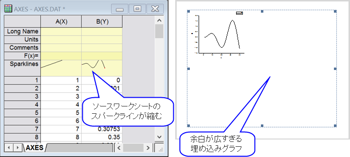

FAQ-861 WordやPowerPointにコピーして貼り付けたり、EMF、PDF、EPSとしてエクスポートすると、グラフが途切れたり、収縮したり、余分な空白ができるのはなぜですか？
Graph-with-LargeMargin
最終更新日:2017/5/25
複数のモニタでWindows PC（ほとんどの場合Windows 10のノートPC）でOriginを使用すると、WordまたはPowerPointにコピーしたグラフ、またはEMF、PDF、EPSファイルとしてエクスポートしたグラフが途切れたり（グラフの左上四半分のみを表示するなど）、収縮したり、空白が多く表示されることがあります 。また、スパークラインが正しくレンダリングされないことがあります。

これはいくつかのPCで起こっており、まだ完全に解決されていません。ただし、次の対処方法の1つまたは複数が、状況を改善する可能性があります。
- 対処方法 1
- Windowsからログアウトしてサインインし直すか、PCを再起動します。ディスプレイのDPIが一方または両方のモニターで変更されているため、これが必要な場合があります。変更をWindowsで完全に有効にするには、サインアウトしてからログインする必要があります。
それでも問題が解決しない場合は、次のうち1つ以上を試してみてください：
- 対処方法 2
- コピー元とアプリケーション（WordやPowerPointなど）の両方をメインモニターに移動し、両方のアプリケーションを再起動するか、セカンダリモニタをオフにしてログアウトしてWindowsに戻し、WordまたはPowerpointにエクスポートまたはコピー貼り付ける時はメインモニタ（ノートPCディスプレイ）のみを使用します。
- 対処方法 3
- Windowsのディスプレイのカスタマイズページを開き、DPIを100%に設定します。2つのモニターを使用している場合、両方のDPI設定を100%にしてください。再度Windowsからログアウトしてサインインし直します（重要）。
- 対処方法 4
- リモートデスクトップでOriginを起動している場合、リモートデスクトップウィンドウを閉じ、リモートPCに行き、再起動します（このPCでサインインしないでください）。次に、実際に作業しているPCに移動し、リモートデスクトップにサインインし、そこからOriginを開きます。
キーワード：ページのコピー、ページの貼り付け、左上の四分位、カットオフ、大きな余分なスペース、大きな余白、エクスポートの問題、Word、PowerPoint、Win 10、emf